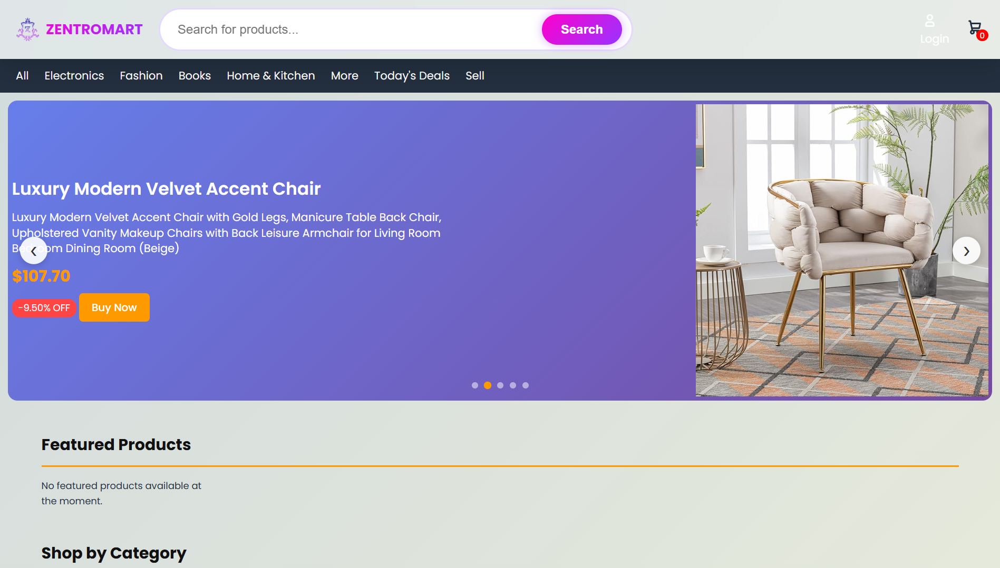
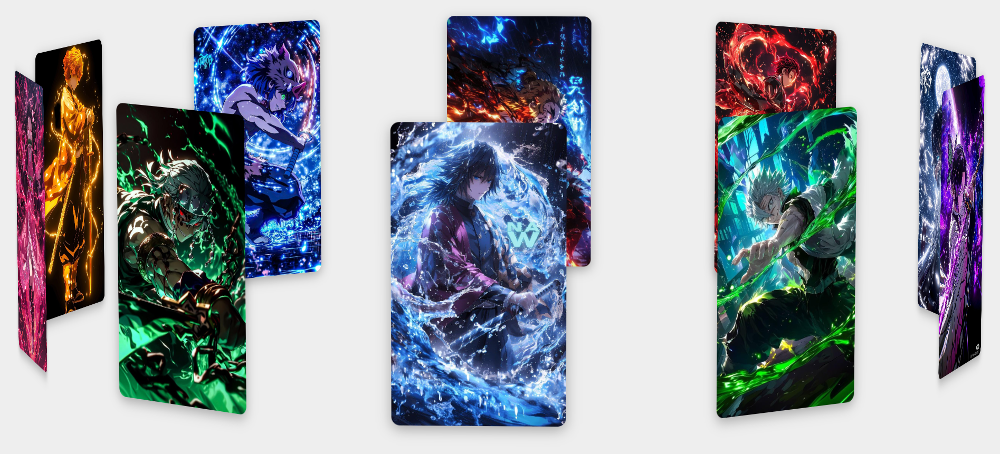
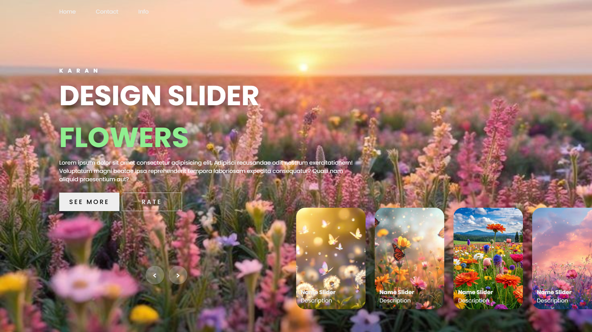
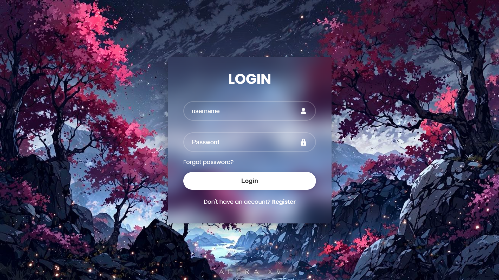

Web Developer with a Solutions-Driven Mindset
I build responsive, user-focused websites that combine clean design with practical functionality. I enjoy turning ideas into smooth digital experiences that feel simple, modern, and reliable.
About Me
A thoughtful builder who cares about how a site looks, feels, and works.
My approach is simple: build interfaces that feel refined, stay usable on every screen, and solve real problems without unnecessary complexity.
Profile
I'm a full-stack developer from Nepal who enjoys learning by building real projects and improving with every new challenge. Over time, I have developed a strong interest in creating websites that are both visually appealing and useful in practice.
My journey in web development began during my computer science studies, where I discovered my passion for transforming complex problems into elegant, user-friendly solutions. I specialize in the WAMP stack but enjoy exploring new technologies and frameworks.
When I'm not coding, I spend time improving personal projects, studying modern interface patterns, and learning through hands-on experimentation.
What I bring
Design sense
Layouts with strong hierarchy, balanced spacing, and a polished visual feel.
Responsive approach
Interfaces that remain smooth, clear, and usable from mobile screens to large desktops.
Practical execution
Clean HTML, CSS, and full-stack development focused on usability and maintainability.
Problem-solving mindset
Turning complex ideas into clear, practical solutions that stay user-friendly and easy to maintain.
Skills
Tools and technologies I use to build modern web experiences.
Frontend
HTML5
CSS3
JavaScript
Backend
Node.js
Express
PHP
Laravel
Database
MongoDB
MySQL
Tools & Others
Git
Figma
Journey
Experience and education that continue to shape how I build.
Experience
Full-Stack Developer
Freelance & Collaboration
Designing and developing e-commerce websites with a focus on user experience, functionality, and clean implementation. Also taking on collaborative and freelance projects across the full stack.
Frontend Developer
Personal Projects
Built interactive user interfaces through personal projects and continuous practice. Transformed design ideas into responsive HTML and CSS layouts with strong cross-browser compatibility.
Education
Bachelor of Computer Applications
Tribhuvan University, Nepal
Currently pursuing a Bachelor in Computer Applications with a growing focus on web technologies and software development. Built and deployed websites while strengthening both technical and practical skills.
High School (+2)
National Examination Board, Nepal
Focused on Computer Science and developed a strong foundation in programming, problem-solving, and core computing concepts.
Projects
A few pieces of work that reflect my style and development process.

Featured Project
E-commerce Website
A commerce-focused website built around product browsing, smoother customer flow, and a responsive experience across devices.
Visit Website
Interactive UI
3D Slider
Exploring motion, depth, and presentation through a more playful interface concept.

Frontend Practice
Image Slider
A simple slider project focused on visual pacing, transitions, and clean interaction.

Interface Study
Login Page
A focused login screen concept centered on clarity, contrast, and simple usability.
Contact
Let's build something clean, useful, and memorable together.
I'm always open to discussing new opportunities, creative projects, or website ideas that need both thoughtful design and practical development.